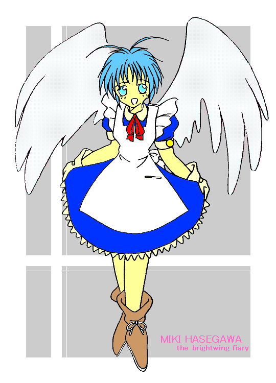

妖精的日常生活
第６話 ファッションショー？
作：ジャージレッド
絵師：ＭＯＮＤＯさん
−−−−−−−−−−−−−−−−−−−−−−−−−−−−−−−−−−−−−−−−−−−−−−−−−−
※ 前回までのあらすじ
お買い物を無事に済ませ、デパートからの単独飛行による帰宅に挑戦する突然妖精少女のミキちゃん。ところがついふらふらと飛行高度を下げたばかりに、数羽のカラスに襲われてしまった。まずい！ このシリーズも突然の最終回を迎えるのか！？ だがご安心を・・・。その危機を救った１つの黒い影。それはコウモリ羽をした、悪魔のような容貌を持った妖精の少年だった。しかし今度は彼がミキちゃんに、あろうことか長剣を突きつけたのだった！！ 詳しくは『妖精的日常生活 第５話 黒い影？』までの各話をお読み下さい。<(_ _)>
−−−−−−−−−−−−−−−−−−−−−−−−−−−−−−−−−−−−−−−−−−−−−−−−−−
コウモリのような羽を持つ、褐色の肌をした妖精の少年。彼が握る長剣の切っ先は俺に向けられていた。そして牙のような犬歯が光るその口から、俺に向かって信じられない言葉が投げつけられた。・・・何？ 何を言ってるんだ、こいつ！？ 言葉は分かるけど、・・・ああっ、何が言いたいのか分からない！！
「どうした？ 天使ちゃんよお。死ぬのが怖いのか？ ふんっ！ 笑わせてくれるぜ。死ぬのが怖いヤツがどうしてカラスの溜まり場なんかに近づくんだ？ おおかた、妖精になったショックで、自殺でもしようとしていたんじゃないのか？ だったら遠慮する事は無い。カラスにやられるよりも、オレの剣にかかったほうが、ずっと楽に死ねるぜ！」
悪魔のような姿の妖精少年は、俺を睨みながらそう言いきると、剣を持ったまま、ずいっと近づいて来た。小さな妖精の身体とは思えないほどの迫力が感じられる。・・・凄い。
「何言ってるんだよ！ 俺は別に死のうとしていたわけじゃないぞ。ただちょっと考え事をしていて、ぼうっとしていただけで・・・。それよりも、カラスから助けてくれたのに、何で今度はお前が、俺を殺そうとするんだよ！？ 冗談だろ？」
俺は、そのコウモリ羽の妖精少年に、質問した。こうやって話しかけていれば、現状が打破出来るわけでも無いのだが、とりあえず時間は稼げるかも。ともかく今はそれしかない。
「ふんっ。命は惜しいってか？ 正直に言ってみろよ。『死にたくありません』ってな！」
その少年は俺を挑発しているかのような口調で、そう言った。それを聞いた俺の頭には、突然、“もしかしてこいつ頭がおかしいんじゃないか？”という考えが浮かんできた。一度その考えが浮かぶと、急激にその想いは増殖し、“逃げなくちゃ！”ということしか考えられなくなってきた。こいつにはいくら話しかけても無駄なんだ・・・。どうしよう、怖い・・・。
「なに黙っているんだよ！ どうした、その口は飾り物か？ それとも何かい。天使様は悪魔とは口も聞きたくないってか？ ふんっ、情けない。やっぱりお前も外見でしか“人”を判断出来ない大バカ者だったか・・・。生きてる価値もないな」
そう言うと少年は、長剣をゆっくりと振り上げた。それを見た俺は、反射的に逃げ出していた。とにかく逃げるんだ。もっと速く、もっとスピードを上げて！
俺は力の限り羽ばたいた。妖精の飛行は、羽ばたきという物理的な力ではなく、あくまでも魔法の力で飛んでいることは知っていたが、それでも力いっぱい羽ばたかずにはいられなかった。そうすることしか今の俺に出来ることはなかったのだ。
ビュウゥーン、バササッ
「おっと、オレのことを舐めてもらっちゃ困るな。妖精の中でも俺達コウモリ羽の妖精は、戦闘タイプの妖精だ。勿論、空中戦にとって一番大事なスピードも、あんたら鳥の羽タイプの妖精よりも、そして昆虫の羽タイプの妖精よりも、ずっと速いんだぜ。逃げられると思うなよ！！」
その少年は、力強い風切音と共に、あっと言うまに、逃げる俺の前方に回り込んできた。素早い！ 理屈ではなく、妖精としての本能が、俺の負けを告げていた。・・・ダメだ。もうどうしようも・・・。
「いったい、さっきからお前は何を言ってるんだよ。俺にはちっとも分からないじゃないか！ 何で俺がお前に殺されなくちゃならないんだよ。だいたいさっきはカラスから助けてくれたのに、何で急に俺を殺そうなんてするんだよ。おかしいじゃないか！？」
恐怖で押しつぶされそうになりながらも、俺は最後の気力を振り絞って、そう言った。理由も知らないまま殺されたくはない。しかし俺は、既に殺されることを半ば覚悟し始めていた。
「お前は天使のような姿をしている。オレから見ても“かわいい”と思う。それが気にくわない。知ってるか？
妖精にも差別が存在するんだぜ。ふっ、どうせ知らないんだろうな」
少年の口からは、思ってもいなかった言葉が飛びだした。差別・・・、妖精にもそんなモノがあったのか！？
「差別って、いったいどんな差別なんだよ。ほとんどの外国では、妖精には人権が無いっていう話は聞いたけど、日本国内では、妖精にもきちんと人権が与えられているんだろ！ 俺はそう聞いたぞ！！」
俺は、デパートで買い物した際に、妖精の店員である大島さんから聞いた話を思い出していた。
「はっ！ 幸せなヤツだな、お前は。差別というモノは法律の中にあるんじゃない。心の中にあるんだぜ。確かに法律上は、人間と妖精の間にも、そして妖精同士の間にも差別は無い。しかし現実は、オレ達、コウモリ羽の妖精は、人間社会の中で差別され、虐げられているんだよ！！」
感情を爆発させたように言葉を吐き出すと、その妖精の少年は、言葉を続けた。
−−−−−−−−−−−−−−−−−−−−−−−−−−−−−−−−−−−−−−−−−−−−−−−−−−
※作者の言い訳
どうしよう。ここまで“萌え萌え”でもなければ、“ほのぼの”ですらない。やっぱり長編になってくると、色々なシーンを色々な雰囲気で書かなくてはいけないわけで・・・。読者の皆様の広い気持ちにご期待するしかありません！ もう少し我慢してください！！ もう少しで“ほのぼの”が復活します。そして、現在の予定では、第８話は、入浴シーンで“萌え萌え”になる予定（？）です。ちなみに第７話は、この妖精少年の視点から見た外伝です。なお、誤解が無いように言っておくけど、２人のラブラブシーンが出てくるのは、まだ当分先だからね。(^_^;)
−−−−−−−−−−−−−−−−−−−−−−−−−−−−−−−−−−−−−−−−−−−−−−−−−−
「まず、話の前に名乗っておこうか。オレは滝沢海斗（たきざわ・かいと）。ちょうど一年前に妖精に召喚されて、こうなった。で、お前の名前は？」
ぶっきらぼうに“海斗”はそう言うと、俺の名前を聞いた。失礼なヤツだけど、ここで怒らせるのは得策ではなさそうだ。まあ、素直に答えておこう。でもこの場合、“幹也”と“ミキ”のどちらを名乗れば良いんだろう？ ちょっと迷っちゃうな。
「長谷川幹也です。妖精になってからは、女の子らしくということで、ミキと名乗ってます」
とりあえず、両方の名前を名乗ってみた。まあ、隠すことじゃないし・・・。
「じゃあ“ミキ”。妖精が生きていくには、意外と金がかかるということは、もう知っているな？」
海斗は、何かを言い含めるかのような感じで、俺に質問してきた。あれれ、話がどっちに進みだしたのか、わかんなくなってきたぞ・・・。
「はい。知っています。今日は、夏服一式と、とりあえず最低限の日用品を買ってきたんですけど、それだけで４６〜７万円かかっちゃいましたけど、それが何か？」
戸惑いながらも、俺は、海斗の質問に対して正直に答えた。海斗の雰囲気は、まだまだ殺気立っていて、どちらにしても正直に答えざるを得ない感じがするし、嘘をつくにしても、海斗が何を考えているのか分からないから、どういう方向に嘘をつけば良いのかも分からない。
「そうだろうな。ちょっとした買い物でも、すぐにそれぐらいの出費はかさむはずだ。妖精は身体が小さいからこそ、逆に色々なことで金がかかる。しかし、まあそれはしょうがないことだ。どの妖精でも同じだからな」
海斗は、頭を振り振り、まったくイヤになるぜ。という雰囲気を漂わせつつそう言った。しかし、その目は俺を捕らえたまま離していない。どうやらスキを見て逃げることは無理のようだ。俺が黙ったままでいると、海斗はまた話し出した。
「問題はその後だ。必要な金を稼ごうとしたとき、妖精のタイプによって、“求人”件数が大きく違ってくる。そんな現実を知っていたか？ えっ、ミキ天使様よぉ！！」
またもや、俺に対して悪意をぶつけてきた海斗。でもそんなこと言われても、妖精少女になったばかりの俺にそんなこと、分かるわけないじゃないか。そうだろ？
「知らないよ。そんなことは。妖精になってから、まだ１日も経っていないし、人間だった頃も、ほとんど妖精のことは感心無かったから・・・」
ぼそぼそと答える俺を、“情けないヤツ”という目で海斗が見ている。え〜ん、そんな目で見るなよ！ お前の姿って、角と尻尾が無いだけで、あとは悪魔みたいなんだもん。それに手には血が付いた長剣を握っているし・・・、怖いんだぞ！ ・・・正直言って俺は、少し震えていたかも知れない。それは空の上の寒さのせいだけではなかった。
「ふんっ、まあいい。・・・いくつか例外はあるんだが、妖精が出来る仕事は、そのほとんどがサービス業か、子供相手関連の仕事だ。だから、世間一般の妖精のイメージに一番近い、昆虫の羽タイプ、中でもトンボの羽タイプの妖精に対する“求人”件数が一番多い。特に女の妖精ならなおさらだ。そのほうがお客さん受けするからな・・・」
海斗は、俺が黙って聞いているのを確認すると、さらに言葉を続けた。なんだよ、コイツってば見た目よりもよく喋るヤツだな・・・。
「簡単に言えば、昔ながらの妖精のイメージに合致した、かわいらしい姿の妖精には、働き口はいくらでもある。ミキ、お前みたいに天使のような羽をしたかわいらしい妖精、しかも女の子なら、どこでだって働けるだろう。ところがオレのようなコウモリ羽の妖精は、話が別だ。おそらくコウモリ羽の妖精は戦闘タイプの妖精だと考えられているんだが、そのせいなのか他の妖精と違って、肌の色は褐色で、牙もあるし、鋭い爪もある。耳だって尖っているし、舌すら尖っているんだぜ」
そう言うと海斗は、自分の口を開けて、舌を出して見せてくれた。刀に付いていた血を舐めていた時にも見えていたが、確かに舌の先は丸くなくて、尖っている。なんだかその形は、妙に気持ち悪い。
「・・・そ、そうなんだ。そんなことぜんぜん知らなかったよ」
海斗の迫力に押されて、俺はそう言うのがやっとだった。
「これで分かっただろ！？ 妖精が生きていくのには金がかかる。しかしだ、オレのようなコウモリ羽の妖精にはまともな仕事が無い。コウモリ羽は不潔そうだし、姿も怖くて気持ち悪い。だから、店のイメージが悪くなるから雇うことは出来ないんだとさ、ヘッ！ 有るのは汚い仕事ばかりだ。だから、お前のようにかわいらしい妖精をみると、世の中の不公平を感じて、殺したくなってくるんだよ。分かるよな・・・」
海斗は、声を落として静かにそう言った。うわあ、その言い方、かえって迫力が増して怖すぎる〜。
「でも、一応仕事は有るんだろ？ 海斗は今、どんな仕事をしてるんだよ？」
俺はどうして良いのか分からなかったので、とりあえず少しでも話を引き延ばそうとして質問をしたんだけれど、結果的にこれが海斗をさらに怒らせることになってしまったらしい。ああっ、どうしよう。
「よくもそんな質問が出来たもんだな！？ ああ、そんなに知りたきゃ教えてやるさ！！ オレ達、コウモリ羽の妖精はな、害獣駆除の仕事をしてるんだよ！！ 簡単に言えばアレだ。ネズミ退治の仕事さ。いつもいつも、暗い屋根裏や、壁の穴に潜り込んで、一匹一匹、この刀でネズミを殺していくんだよ！！ お前達がニコリと客に愛想を振りまいてるだけで金を稼いでいる時に、オレ達は埃まみれ、血まみれになりながらネズミと戦って、命を張って金を稼いでいるんだよ！！ どうした、コラ！ 何とか言えよ！！」
海斗は、怒りもあらわに一気にそう言うと、俺を鋭い眼光でにらみ付けた。ううっ、もう何を言えば良いのかまったく分からない！ 相手はいつも身体を張った仕事をしているから力も強いだろうけど、こっちは女の子。力では絶対にかなわないだろうし、口でもかないそうにない。もはやとにかく謝るしかないのか？
「な、何だかよく分からないけど、ゴメン。俺に出来ることならするから、だから許してくれよ。な？」
俺のその言葉を聞いた途端、海斗はニヤリと笑った。口から覗いた犬歯が妖しく光る。その笑顔をみたとき、俺は抜け出せない罠にでもはまったかのような、何だかイヤな感覚を覚えた。ううっ、もしかして、まずいことを言っちゃたんじゃないだろうか？ 不安になってきたよ・・・。
「ほう、何でもするってか？ そいつはいい。だったら助けてやる代わりに、命の代金を払ってもらおうか？」
さっきまでの雰囲気とは打って代わって、急に落ち着いた声でしゃべり出す少年。まったく、妖精ってのは感情の起伏が激しすぎて疲れる・・・。
−−−−−−−−−−−−−−−−−−−−−−−−−−−−−−−−−−−−−−−−−−−−−−−−−−
※作者のツッコミ
感情の起伏が激しいのは君も同じでしょ。ミキちゃん。それに妖精の感情の起伏が激しいっていうのは、後々、重要な伏線になるんだから、我慢してよね。ふっ、しかしこの作品。自分で書いててもあきれるぐらい細かい伏線が多いけど、うまく収拾がつくんだろうか？ 思いつく度ごとに伏線はってるもんなあ。伏線を忘れないうちに何とかしないと。(-_-;)
−−−−−−−−−−−−−−−−−−−−−−−−−−−−−−−−−−−−−−−−−−−−−−−−−−
「命の代金って何のことだよ！？」
俺は、イヤな予感が急速に広がってくるのを感じつつ質問した。もしかして、ゆすられてるのかな？
「命の代金は、命の代金さ。それ以外に何があるって言うんだよ？」
海斗の言葉を聞いて、やっぱり俺はゆすられているんだと確信した。くそう、ゆすりたかりには屈しないぞ！ こういうモノは、最初が肝心なんだ。味をしめたら、こういう奴らって、何度でもゆすりにやってくるんだから！！ 最初にバーンと断らないと。
「あいにくだけど、俺をゆすろうとしてもダメだからね。だって俺、お金持ってないもん」
財布を持たずに外に出るのは、心細いもんだけど、ホント今日は財布を持たずに行動していて良かったよ。まあ、妖精の身体じゃ、重い財布は持てないんだけどさ・・・。とにかく無い袖はいくら振っても、お金は出てこないんだからね。
「お前、何か勘違いしてないか？」
海斗がおかしそうにニヤニヤしながらそう言った。なんだよう、これがゆすりでなければ、なんなのさ？
「だって、海斗がしてるのは、“ゆすり”だろ？ 俺を殺すなんて言うし、助けて欲しければ命の代金を払えだなんて言うし・・・」
俺は、そう言ったけれど、あまりにも堂々とした海斗を前にすると、何だか自信が無くなってきた。うぅ〜ん、もしかして何か見落としてるのかな。でもこれは“ゆすり”にしか見えないし、いったいどうなっているんだろう？
「ははっ、お前を殺してやるなんて言ったのは悪かった。謝るよ。ほら、この通りだからさ」
そう言うと、海斗は、ホバリングしながら器用に頭をペコリと下げた。えっ、どういうことなんだ？ わけがわかんないよ〜。
「でも、でも・・・」
俺はただ、おろおろしてるだけだった。あ〜ん、頭がうまく回らないよぉ〜。脳味噌まで妖精少女になっちゃたのかなあ。ぜんぜん論理的に考えられない！
「さっきの態度は、演技だよ、ミキ。お前がカラスの溜まり場にいたのは、妖精になってしまったのをはかなんで自殺をするつもりだったのか、つまり、お前は死にたがっていたのか、それとも生きていたいと思っているヤツなのか？ それをキチンと確認したかったんだよ。・・・でないとビジネスの話が出来ないからな」
えっ、何？ 演技、さっきのが・・・。それにビジネス？
「こら、海斗！ お前の言うことって、言葉は分かるけど、何が言いたいのか全然分かんないぞ！ もっとちゃんと分かるように説明しろよ。演技だとか、ビジネスだとかって、いったい何の話だよ！？」
俺は半ば逆ギレ状態で、海斗に対して疑問点をぶつけた。
「しょうがねえなあ、まだ分かんないのか？ つまりだ、お前は、死にたいとは思っていなかった。これは間違いないはずだ。確認済みだからな。そして、オレはお前の命を助けた。だったらオレはお前の大事な命を助けたんだから、その命の代金として、相応の金を払ってもらう権利がある。そうじゃないか？ もちろん現金ですぐに払えとは言わない。オレは優しいからな。ローン払いでも良いぞ」
海斗はゆっくりとそう言うと、俺に対して同意を求めた。な、なんだよ、こいつ・・・。俺を殺してやると勝手に騒いでおいて、それを助けてやるから金を払えだなんて・・・、まったく、とんでもないヤツだな！！
「おい、勝手に俺を殺そうとして、命を助けてやるから金を払えだなんて、やっぱり“ゆすり”そのものじゃないか。払わないからな！ そんなお金！！」
俺は怒りもあらわにそう言うと、“べー”と、舌を出してやった。
「誤解してもらっちゃ困るな。さっきから言ってるようにお前を殺してやると言ったのは、お前が死にたがっているヤツじゃないのを確認する演技だよ。金を請求した後で、『自殺を邪魔された』なんて文句つけられるのもイヤだからな」
そう言うと海斗はウィンクをした。うっ、妖精の男って、今朝出会った佐々山時雄もそうだったけど、みんなキザな態度を自然にこなすヤツばかりだな・・・。
「もっともコウモリ羽の妖精には、まともな働き口が無いというのは、本当のことだから、お前のことを気に入らないというのも嘘じゃ無いぞ。・・・まあ、話を戻して、とにかくオレが言っているのは、カラスから助けてやったお前の命の代金だよ」
海斗はそう言うと、キラキラと光る黒い目で、ジッと俺を見つめた。
「へっ、カラス・・・！？」
そういえば俺って、カラスに襲われたところを海斗に助けてもらったんだったっけ・・・。ついさっきのことなのに、海斗の印象があまりにも強烈だったから、忘れちゃってたよ。
「ようやく思い出したようだな。俺がミキを助けなければ、お前は今頃死んでいた。それは認めるよな」
海斗は、自信満々の様子でそう言うと、ニヤリと笑った。そして手に持っていた長剣を腰の鞘に納めると、また言葉を続けた。
「というわけで、カラスから助けて差し上げた命の代金、しめて３００万円也でございます。それではどのようにお支払い頂けますのでしょうか。ビシッと即金になさいますか？ それともローンをご希望で？ ただ今なら初回特典が付きますから、即金なら１割引、ローンなら無利子となっていますが、いかがなさいますか？ お客様♪」
ニコニコと営業スマイルを浮かべる海斗の笑顔は、俺にとって、本物の悪魔の笑顔のように見えたのは、言うまでもない。うわぁ〜、ホントにホントに、どうしよぉおおお〜〜！！ ３００万円なんて大金、逆立ちしたって払えないよぉ〜。
・・・値切るの“ＯＫ”かな？
−−−−−−−−−−−−−−−−−−−−−−−−−−−−−−−−−−−−−−−−−−−−−−−−−−
※作者からのお詫び
前回の最後の展開から、その後のミキちゃんのことを考えて、ハラハラドキドキしていた人、ごめんなさい。前回から登場している妖精少年の海斗クン。彼は完全な悪役で出したつもりなのですが、作者のイメージの中で、どんどんと“いいひと”になっていくんです。だから当初の設定から軌道修正して、憎めない悪役にしちゃいます。よろしくね。(^_^)
−−−−−−−−−−−−−−−−−−−−−−−−−−−−−−−−−−−−−−−−−−−−−−−−−−
「ただいま〜」
「おっ、幹也、お帰り。ほう、なかなかかわいらしい服を買ってきたじゃないか。やっぱり珠美香に選んでもらったのか？ ・・・おや、そっちの妖精君は、友達か？」
俺が家に着いたとき、父さんが玄関で何か大工仕事をしていた。どうやらドアの一部を切り取り、そこに何かを取り付けているらしい。その父さんは、海斗に気が付いて興味深そうに訊いてきた。
「いや、友達ってわけじゃないんだけど・・・。海斗、俺の父さんの徹也だよ。ええと父さん、この妖精は、滝沢海斗。まあ、詳しいことは後でゆっくり話すよ。それよりも父さん、何やってるんだよ？」
俺は、海斗と父さんに、お互いを紹介すると、今度は父さんに何を作っているのかを質問した。ホント、何をやってるんだろう？ 普段はこういう日曜大工的なことはやらない人なのに・・・。
「ほう、海斗君ですか。幹也の父の徹也です。うちの幹也も、妖精になったばかりですから、色々とご迷惑をかけると思いますが、これからよろしくお願いします」
父さんは事情を知らないから、愛想良く海斗に挨拶してるけど、・・・どうしよう。いつホントのことを話そうかな？ 海斗が家に来た理由は、俺の家を確認してキチンと３００万円を回収する為だなんて・・・。
「海斗です。お宅のミキさんとは、先ほど知り合ったばかりですが、こちらこそよろしくお願い致します」
とりあえず海斗は、そつなく挨拶している。海斗自身も、もう少し落ち着いた場所で、例の件を切り出すつもりらしい。うぅ〜、この雰囲気、なんかイヤ！！
「で、父さん。何やってるの？」
俺は、海斗にあまり喋らせたく無かったので、再度、父さんに質問した。すると父さんは、得意そうに話し出した。・・・普段、こういうことはやらないから、自慢したいんだな、きっと。
「ドアに妖精用の出入口をつけてるんだよ。ほら、ペットの猫用ドアとかあるだろ？ あれと同じで、妖精サイズの出入口をドアの上の部分に取り付けてるわけだ。ほら、なかなかいい感じだろ？」
確かに、ドアの上辺の真ん中あたりが切り取られており、そこには小さな妖精サイズにしつらえたドアが取り付けてあった。猫用のドアは、地面に近いドアの下の部分に取り付けるモノだが、これはドアの上の部分に取り付けてあるから、空を飛べる妖精しか入れないようになっている。
「へえ〜、ホント。なかなか良く出来てるよね。これ、父さんが考えたの？」
話題をなるべく海斗から遠ざけたかった俺は、熱心に質問した。
「いや、もしかしてと思って、幹也が出かけてからすぐにホームセンターに電話してみたら、“妖精のドア”というものを売っているというから、さっき買って来たんだよ。これなら妖精の身体でも、自由に家に出入り出来るぞ」
父さんは、得意満面の笑顔を浮かべてそう言うと、続けて海斗に話し出した。
「ところで海斗クンの家にも、こういう物は付いているのかな？」
質問を受けて、海斗は、ちょっととまどったような顔をして、答えだした。へえ、コイツでもとまどうことがあるんだ。意外な一面かも・・・。
「まあ、妖精専用の住宅なら付いてると思いますが、残念ながら、オレが住んでいるのは普通の賃貸アパートですからね。こんな改造は出来ないんですよ」
えっ、海斗って独り暮らしなんだろうか？ 妖精でも独り暮らしって出来るのかな・・・。
「海斗って、独り暮らしなの？ じゃあ、いつもはどうやって家に入るの？」
父さんの質問には素直に答えたくせに、海斗のヤツ、俺の質問を聞くと、うるさそうな顔になった。ふぅ〜ん、俺のようなかわいらしい妖精が嫌いっていうのは演技じゃなかったんだ。まあ、どうでもいいけどね。こんなヤツに好かれようが嫌われようが・・・。
「人間だったときからの友達と２人で借りているアパートに住んでいるけど、ルームメイトが留守の時は換気扇の取り付け口から入るんだよ。出入口に使えるように、換気扇の本体は取り外してあるからな。まあ、この程度なら改造という程でも無いし、退去するときにはまた取り付けておけば良いわけだから、まず問題は無いはずだ。それに煙が出るような料理もあんまりしないしな」
へえ、思ったよりもしっかりと答えてくれたなあ。でも換気扇から出入りするのか・・・。
「おい、幹也。そういう話は、家の中でも出来るだろ。お客さんに、早く家に入ってもらいなさい」
父さんはそう言うと、一旦、家の中に入って幸也を呼んだ。
「幸也〜、幹也がお客さんを連れて帰ってきたぞ〜。ちょっと、お茶とお菓子を出しといてくれ！！」
そして俺と海斗は、家の中に入っていった。あ〜あ、これからのことを考えると気が重いなあ・・・。やっぱり母さんも帰ってきてから話を切り出すほうが良いのかな？ そりゃあ、カラスから助けてもらったのは事実だから、お礼をすること自体はしょうがないけど、でも３００万円なんて高すぎるよ。もう、どうしよう・・・？
−−−−−−−−−−−−−−−−−−−−−−−−−−−−−−−−−−−−−−−−−−−−−−−−−−
※内輪話を１つ
数年前の話ですが、換気扇をしばらく使っていなかったら、スズメが巣を作ってしまいました。久しぶりに使ったところ、どうも煙を吸い込まないなあと思ったら、スズメの巣でふさがっていたのですよ。換気扇の外側の部分は、屋根も付いてるし巣を作るには良い場所らしいですね。というわけで、妖精の出入口として換気扇というモノは、私的には有力候補なのです。(*^_^*)
−−−−−−−−−−−−−−−−−−−−−−−−−−−−−−−−−−−−−−−−−−−−−−−−−−
「わあ、カッコイイ〜」
幸也が、海斗を見るなり上げた第一声は、それだった。どうやら幸也の妖精オタクとしての守備範囲は、かなり広いらしい。妖精の女の子だけが好みかと思ったら、妖精だったら男にでも興味があるらしい。まったく困ったもんだ・・・。
「お前、オレの姿を見て、気持ち悪く思わないのか！？」
海斗は、幸也のような反応には慣れていないらしく、少し面食らったような顔をしつつそう言うと、幸也の目の前でホバリングしながら言葉を続けた。
「良く見てみろよ。薄汚いコウモリのような羽。耳は尖って、口からは鋭い牙が生えている。それに舌だってこのとおり尖ってるし・・・。そして手の指に生えているのはかぎ爪だ。おまけに肌も褐色で、これであとは角と尻尾さえあれば、悪魔の姿そのものじゃないか？ こんなオレがなんでカッコイイんだよ！？」
海斗はそう言うと、自分の姿が良く見えるようにくるりと空中で１回転した。・・・そう言えば海斗の着ている服って、紺色のＴシャツの上に、深緑色をした迷彩模様が入った長袖の上着を着て、そして下はジーンズ風のズボンだけど、この季節にしては暑苦しそうな服を着ているのは、自分の肌を少しでも隠そうとしいるからなんだろうか？
「そんな！？ ぜんぜん気持ち悪くなんか無いよ！ その姿って強そうでカッコイイよ。ね、ミキ姉ちゃん？」
幸也はそう言うと俺に同意を求めてきた。うぅ〜ん、俺に振られても・・・。
「まあ、カッコイイかどうかはともかく、強そうっていうのはそうかもな。・・・ああ、遅くなったけど、海斗、こいつは俺の弟の幸也。・・・そして幸也、この妖精は海斗っていうんだ。幸也、ミーハーしてないで、とりあえずまともな挨拶してくれよ」
あとで海斗に対して支払う、カラスから助けてもらった代金を値切るという下心があったから、少しでも印象良くしてもらうために、俺は、幸也に注意した。うぅ〜、せこいよな・・・、俺も・・・。
「ああ、ごめんなさい。長谷川幸也です。妖精のことを調べたりするのが趣味です。だから今日は海斗さんに出会えて嬉しいです」
おおっ、幸也のヤツ、小学校四年生にしては、そつのない応対をするじゃないか！？ さすが末っ子、人当たりが良い・・・。
「へえ、妖精のことを調べるのが趣味なのか？ じゃあ、オレのようなコウモリ羽の妖精についても良く知っているのか？」
海斗は、探るような目つきをしながら、幸也に質問した。海斗が、幸也に対して、何かを試しているらしいことは分かったが、何を試したいのかがまったく分からない。海斗のヤツ、何を気にしているんだろう？
「知ってるよ！ 妖精には色々な種類の妖精がいるけれど、コウモリ羽の妖精は、その姿や飛行能力の高さ、そして目や耳や鼻の良さと、力の強さから、戦闘タイプの妖精と考えられているんだよね？ かわいい妖精ももちろん良いけど、カッコイイ妖精も僕、好きだな♪」
嬉々として答える幸也を見て、海斗は、ふっ、と肩の力を抜くと、独り言のようにつぶやいた。
「どうやら本気で言ってるらしいな・・・」
海斗のそのセリフを聞いて、コウモリ羽の妖精は、人間社会の中で、差別を受けているという、先刻の海斗の言葉を思い出した。どうやら、強がってはいるけれど、海斗はかなり気にしているらしい。
「じゃあ、今すぐお茶とお茶菓子を出すから、海斗さんとミキ姉ちゃんは、居間で待っててよ」
幸也はそう言うと、台所に消えていった。俺は、そのまま海斗を居間まで案内すると、二人して居間のテーブルに着地した。一応、靴も履いていることだし、どうしようかと思ったが、この靴を履いて地面を歩いたわけじゃないから、土足、というわけじゃないし・・・。やっぱり飛んで移動していると、靴を脱ぐタイミングが分からないなあ。玄関で靴を脱ぐことすら忘れちゃうとは！？
でも、妖精として日常生活を送るだけなのに、人間とずいぶん違うことが多くて、とまどっちゃうよ！！
−−−−−−−−−−−−−−−−−−−−−−−−−−−−−−−−−−−−−−−−−−−−−−−−−−
※作者の悩み（というほどでもないけど）
妖精は靴を脱いで家の中に入るのか？ それとも靴を履いたまま家の中に入るのか？ 皆さんはどう思いますか？ 絵的には、靴を履いたままのほうが良いのでしょうが、外を歩き回った（？）靴でテーブルの上に乗られるのもちょっと・・・、という気持ちもあります。まあ、このあたりのことは、まだ妖精社会としてのマナーが確立していないということで、『どっちもアリ！』が正解ということにしておきましょうか？ それじゃ、そういうことで！！ (^_^)v
−−−−−−−−−−−−−−−−−−−−−−−−−−−−−−−−−−−−−−−−−−−−−−−−−−
「海斗さんは、ネズミ退治の仕事をしてるんですか！？ それで刀を持っているんですね？」
幸也はさっきから、海斗とのおしゃべりに夢中だ。ホント、妖精オタクなんだから・・・。それにしても海斗のヤツもさっきとはずいぶん雰囲気が違うじゃないか。幸也と話している海斗は、何だかとても生き生きしていて明るい・・・。
「そうさ。逃げるネズミを素早く追いかけて、空中から回り込み、この刀で、大きなドブネズミも一撃のもとに切り捨てる！ 剣の腕は実戦で鍛えられてるからな。強いぜ、オレは！」
海斗は得意そうに、大げさな身振りで幸也にネズミ退治の話をしている。でもなあ、しょせんネズミ退治なんだろ？ これがモンスター退治の話だったら面白そうなのに・・・。幸也ったら、どうしてあんな話を面白そうに聞けるんだろう？
「とにかく、このオレにかかれば、家中のネズミを退治するのに１時間もかからないぜ。何てったって、人間のネズミ退治の方法は、罠を仕掛けたり毒をまいたりといった方法しかない。けれどオレの場合は、この身体を活かして積極的にネズミを追いかけて、巣まで探すことが出来るからな。暗闇だって平気なんだぜ。とにかく、迅速かつ完全に！ これがオレの仕事のモットーさ」
あ〜あ、なんだか海斗の性格が分からなくなったよ。最初はゆすりたかりをするやくざのようなヤツかと思ったら、カラスから助けたことを恩に着せて、法外なお金を請求する守銭奴のようなヤツだったし・・・。かと思えば、やけに明るくネズミ退治の話をするようなところもあるし・・・。わかんないなあ・・・。
「なあ、海斗。妖精の初心者として聞きたいんだけれど、そんなに一所懸命に働かなくちゃいけないほど、妖精が生活するのにはお金がかかるものなのか？」
俺は、黙って海斗と幸也の話を横で聞いているのも疲れてきたので、海斗に話しかけてみた。ちゃんと答えてくれるかな？ 海斗のヤツ、俺のこと嫌っているからなあ・・・。
「んっ？ 金か？ まあ、慎ましく生活しようと思えば出来なくもないけど、オレの場合、ちょっと事情があるからな・・・。金は、どれだけあっても邪魔にはならないな」
海斗のヤツ、幸也と話していて気分が良かったのか、やけに素直に質問に答えてくれたけど、事情って、いったい何だろう？
「事情って、何だよ？」
その質問をしたら、急に海斗の機嫌が悪くなってきた。どうやら海斗の秘密に首を突っ込み過ぎたらしい。
「プライベートだ！ 話す必要は無い。それよりも、ミキ！！ お前もこれから金が必要なんだから、バイト、するんだろ？ だったら、そんな男丸出しの言葉遣いはやめて、“ワタシ”とか、女言葉を使うように注意しろ！ そのままじゃどこも雇ってはくれないぞ！！」
海斗は、質問の矛先をかわすためか、急に俺の言葉使いに文句を付けてきた。でも、そう言われても、昨日まで男だったんだから、しょうがないじゃないか！？
「バイト中は、ちゃんとするから、普段はこれで大丈夫だよ。心配ないって・・・」
俺はそう言うと、この話題をもう終わりにしようとしたんだけど、海斗は、なおも食い下がってきた。
「じゃあ、ここで、一回、やってみろよ。いいか？ ここは喫茶店だ。客が店に入って、席に着いて、ミキがメニューを持っていって、注文をとるまでをやってみろ！ 状況を想定して、女の子らしいセリフで、キチンと対応出来たなら、オレはもう何も言わない。だがな、上手に出来ないときは、分かっているだろうな？」
ええ〜！ 上手くできなかったときは、どうなるんだよ！？
「おい、幸也クン。ちょっと手伝ってくれ。お前が、お客さん役だ！ 居間の外に一回出て、入り口から入ってきて、ここに座ってくれればいい。そしてミキ！ お前は、お客さんの動きに合わせて、挨拶をしたり、案内をしたりするんだぞ！ オレはここで見てるからな。じゃあ、スタンバイ！！」
こうして、なぜか俺は、いい年して、“喫茶店ごっこ”をする事になってしまった・・・。
−−−−−−−−−−−−−−−−−−−−−−−−−−−−−−−−−−−−−−−−−−−−−−−−−−
「ぎいー、ばたん。からんからん」
幸也が、口で擬音を言いながら喫茶店に入ってきた・・・、という設定になっている。あ、あほらしい。
「いっ、いらっしゃいませー」
設定に合わせて、俺は喫茶店の妖精ウェイトレスになったつもりで、挨拶をした。ごっことはいえ、ちょっと照れるな・・・。
「ストップ！！ ダメダメ、何やってるんだよ！！」
俺の挨拶を聞くやいなや、いきなり海斗がダメ出しをしてきた。
「ミキ、照れてる場合じゃないだろ！ バイトも、正規の店員も、お客さんから見たら、どちらもお店の店員さんなんだからな！ バイトだから手を抜いて良いなんてことはないんだぞ。声が小さいし、それに、“照れ”がまだ残っているぞ。やり直し！」
こうして俺は、妖精の女の子をアピールする、かわいらしい挨拶が上手に出来るまで、何度も繰り返し、練習をさせられた。しかし、つきあわされた幸也も気の毒だよ。ごめんな・・・。そして、何度目かのダメ出しで、俺はとうとうキレてしまった。
「もうっ！ そんなに言うなら、海斗がまず見本を見せろよ！」
どうせ海斗も、かわいらしい女の子っぽい挨拶なんて出来ないだろうと思ったから、そう言ったんだけど、俺のその言葉を聞いた海斗の反応は、ちょっと予想外だった。
「しょうがないなあ。じゃあ、見本を見せてやるから、よく見てろよ！！ それじゃあ、幸也クン、申し訳ないけど、もう一回頼む。いいかな？」
海斗は、かわいらしい挨拶をする事なんて何でもないという顔で、そう言った。・・・しかし海斗の口調って、俺に対する時と、幸也に対する時ではずいぶん違うけど、これって差別とは言わないの！？ うぅ〜、なんだか怒りがだんだんと湧いてきたような・・・。
俺が海斗に対して腹を立てている間に幸也は居間の外へ出ており、一方の海斗は、準備を整えてスタンバイしていた。
「ぎいー、ばたん。からんからん」
幸也が、口で擬音を言いながら居間（設定上は喫茶店）に入ってきた・・・。いったいこれで何度目になるんだろう？ 幸也も文句ひとつ言わず、よくつきあってくれてるよな。
「いらっしゃいませ、こんにちは〜♪」
明るく、大きな、ハキハキした声で挨拶をする海斗・・・。すごい、とてもあの姿からは想像も出来ない、かわいらしい声だ・・・。
「どうぞこちらにおいで下さい」
幸也の前を飛びながら、居間のテーブルのほうに案内する海斗。もちろんニコニコと笑顔を浮かべているのは言うまでもない。ふんっ、ここまでなら、女言葉ってほどじゃないし・・・、まだまだ！！
「メニューをどうぞ。何になさいますか？」
見えないメニューを幸也に渡すふりをしながら、海斗が注文を聞いている。
「何か、この店の“おすすめ”はありますか？」
幸也と海斗との間で、何か打ち合わせでもしてあったのか、幸也はウェイトレス役の海斗に、店の“おすすめ”を聞いている。幸也のヤツ、すっかり海斗に丸め込まれちゃってるよ。なんか悔しいな・・・。
「そうですね。甘さ控えめが、お客様のお好みでしたら、アイスミルクとホットケーキのセットなんていかがでしょうか？」
見事な営業スマイルで、海斗が幸也に応対している。う、うまいじゃないか！ どうしてあんなに上手なんだろう！？
「いえ、甘いのぜんぜん大丈夫です」
そういや、幸也は甘いモノ大好きだったっけ。ホント、お子さまなんだから・・・。
「では、私のお薦めということで、アイスココアと、イチゴショートはいかがですか？ 当店のケーキは、特注のフルーツを使用してますから、おいしさが違いますわよ♪ 私も大好きなんです♪」
牙も生えてるし、耳も尖っていて、ちょっと異形の顔なのに、ニッコリと微笑む海斗の顔は、とてもかわいく見えた。・・・すごい。なんであんな雰囲気が出せるんだ？ 男のくせに・・・。
「へえ〜、じゃあそれにしようかな・・・」
幸也の言葉を受けて、海斗の演技は、いよいよラストを迎えた。
「かしこまりました。それでは少々お待ちくださ〜い♪」
そう言うと、海斗は俺のほうに向き直り、『どうだい！？ えっへん！！』という態度で俺の顔を見た。確かに海斗のヤツ、間違いなく俺なんかよりも、女の子のように喋るのが上手い！！ もっとも昨日までは男だったんだから、俺が女の子のように喋れなくても、当たり前なんだけど、目の前で海斗のヤツにこうも上手く演じられると、なんか悔しい。
「確かに上手いよ。それは認めるけど・・・。どうしてそんなに上手いんだよ？」
たとえどんなことであれ、海斗のことを認めるのが悔しかった俺は、何か裏でもあるんじゃないの？ という気持ちだけで、ただそれだけの考えで、海斗に質問をした。
「んっ？ なぜかって？ まあそりゃあオレだって、もう１年前になるけど、妖精になる前はれっきとした女の子だったからな。これでも現役の女子大生だったんだぜ。もっとも今は大学には行ってないけどな。・・・そういや、まだそのことは話してなかったっけ。オレの人間だった時の名前は汐海（しおみ）っていうんだ。滝沢汐海、よろしくな。でも今は、海斗って呼んでくれよな。この姿で汐海っていうのも変だから・・・」
さらりと、重要なことを話す海斗。
「え〜っ、うそ！ 女の子だったって！？」
俺は思わず大声を上げてしまった。そんな、まさか元女子大生のお姉さんだったとは・・・。
「でも、さっきまでの口調は、ぜんぜんそんな雰囲気がなかったじゃないか・・・！？」
俺は、いまだその言葉が信じられず、海斗の前に飛んでいくと、まじまじと海斗の飄々とした顔を見ながらそう言った。
「嘘なもんか。本当に決まってるだろ。こんなことで嘘を付いても、１円の得にもならないからな。それに今のこのしゃべり方も、仕事をする上で必要だったから身につけたんだ・・・」
なぜかその時の海斗は、強い決意を感じさせる口調でそう言うと、胸の前でぐっと右手を握りしめた。
「仕事をする上でって・・・？」
俺は海斗の雰囲気に押されたのか、脳味噌がしびれたかのような感覚を味わいながら、ただ反射的にそう訊いていた。
「オレはフリーで仕事をしているからな。ネズミ駆除の仕事を請け負う為には、オレ自身が強そうなイメージを持っていないと、注文を取りにくいんだよ。やっぱりやってることはネズミとバトルして退治するという、体力勝負のようなところがあるからな・・・。だが注文さえあればフリーのほうが稼げるのは間違いない。というわけで仕事の都合上、意識的に強そうなイメージを作っているうちに、こういうしゃべり方が身に付いたと言うわけだ」
少しだけしみじみとした雰囲気で答えると、海斗は頭をひとふりして、ビシッと俺を指さしてこう言った。
「というわけで、ミキ。お前の場合は、もっと言葉使いを女の子らしくしなくちゃ稼げないぞ！ 特に自分のことを、もう『俺』なんて言うなよ。自分のことは『ワタシ』と言うように努力しろ！」
こうして俺は海斗の指導のもと、女言葉の訓練を続けて受けることになった。くそう、バイト先もまだ決まってないのに、なんでこんなことしなくちゃいないんだよ〜。俺が、自分の不幸を呪っていると、海斗が、ニッコリとした悪魔の笑顔をしながら、とどめの言葉を吐いた。
「そして、たんまり稼いで、例の代金をちゃんと払えよ。いいな！ ミキ！！」
横では事情の分からない幸也が、きょとんとした表情で首をかしげていた。俺って、もしかして世界一不幸な妖精少女かも・・・。うぇ〜ん、泣きたい・・・。
−−−−−−−−−−−−−−−−−−−−−−−−−−−−−−−−−−−−−−−−−−−−−−−−−−
※作者より解説の一言
ミキちゃんの男言葉を、女言葉に切り替えるにあたって、やっぱり動機付けと言うモノが欲しかったので、こんな展開にしてみましたが、いかがですか？ 仕事上の必要性で言葉使いを変えるのなら、さほど抵抗感ってありませんよね。私も就職して“僕”から“私”へと言葉を変えましたが、１ヶ月もすると、かえって昔の言葉使いをするほうが恥ずかしくなってしまったことを覚えています。(*^_^*)
−−−−−−−−−−−−−−−−−−−−−−−−−−−−−−−−−−−−−−−−−−−−−−−−−−
夕食後、・・・そうさ、海斗のヤツ、ガツガツと夕食まで食べやがって！ まったく厚かましいヤツだ。ホントにこれで１年前までは女子大生だったのだろうか？ 今じゃすっかり“がさつ野郎”じゃないか。
とにかく夕食を食べ終わって、落ち着いたところで海斗は、俺の家族全員に、俺がカラスに襲われたところを海斗が助けたことと、そしてその報酬として３００万円を要求しているという、すべての事情を説明した。
「そんな！？ 幹也を助けて頂いたのは有難いですが、だからといって３００万円だなんて！！」
食事中までの和やかな雰囲気とはうってかわって、父さんは驚きの声を上げて、海斗に抗議した。
「でも、ミキ姉ちゃん。あれほど大島さんがカラスには気をつけろって言ってたのに、ぼけーっとしてたのが悪いんじゃないの！ もしも海斗さんが助けてくれなかったら、ホントに死んでいたかもしれないのよ！！」
昼間のデパートで、妖精のことについてかなり知識を得ていた珠美香は、どうやら海斗の味方らしい。やっぱり妖精がカラスに襲われて死ぬこともあるっていうことを知ってるだけあって、死ぬことを思えば３００万円なんて安いもんだというふうに考えていることがありありと見て取れる。・・・珠美香の裏切り者。
「ねえ、珠美香。母さん、よく分からないんだけど、妖精にしてみたら、そんなにカラスって危険なの？」
戸惑いを隠せぬ表情ながら、母さんは比較的冷静に判断しようとしているらしい。まずは、妖精にとってカラスはどのぐらい危険なのかを、珠美香に質問している。
一方、幸也はさっきからこの場の雰囲気の急変にただびっくりしているだけだし、父さんは冷静に判断出来る状態じゃないし・・・。 うぅ〜ん、どうして長谷川家って、こうも女のほうが強いんだろうか？ もと男としては、なんか悲しい。
「カラスがいないような高いところを飛んでれば大丈夫なんだけど、海斗さんが言ってたように、カラスの溜まり場に近づいちゃって、数羽のカラスに襲われるようなことになったら、本当に死んでてもおかしくないわよ。間違いなくミキ姉ちゃんの不注意ね。ちゃんと気をつけて飛ばないから悪いのよ！」
珠美香は興奮しながらも、事実は事実として、非は俺にあると主張した。こら、珠美香。もう少し身内の肩を持ってくれてもバチは当たらないんじゃないの？ そりゃあ、考え事をしながら飛んでた俺が悪いのは事実なんだけどさ・・・。
「なるほどねえ・・・。カラスに襲われたのは、ミキちゃんの不注意のせいということね。そして数羽のカラスに襲われたら、まず死んでてもおかしくないと・・・」
母さんは珠美香の言葉を聞いて、何か考え込んでいる。いったい何を考えているんでろう。母さんって、時々、ものすごく思い切った発想をするからなあ。
「で、どうされますか？ お宅のミキお嬢様の命を助けた代金、３００万円。お支払いしていただけるんでしょうかね？ それとも踏み倒されるおつもりですか？」
くうぅ〜、海斗のヤツ、やけに丁寧な言葉使いなのが、よけいに神経を逆撫でする！
「海斗、確かに俺はお前に助けてもらったけど、だからと言って３００万円をよこせだなんて、ちょっとあくどいぞ。だいたいだな・・・」
俺が海斗に抗議しかけたら、海斗は手を前に出してそれを制止した。
「ストップ。“俺”じゃなくて、“ワタシ”だろ。ミキは女の子なんだから、女の子らしくしないと、ダメだろ。せっかくかわいいんだから、もっと女の子らしくすれば、人気も出て、うんと稼げるぜ。そうしたら３００万円なんてあっという間なんだからな。しっかりしてくれよ。あっ、それから、今後オレに対して男言葉で話しかけても返事しないからそのつもりでな」
海斗のヤツ〜〜！ どうしてくれよう。しかし、ここはひとまず押さえて・・・。
「あ〜、だから、その、ワ、ワタシ。んっんっ、え〜と、ワタシ・・・は、助けてもらったことは感謝してるから、なにも、お金を払わないとは言ってない、でしょ！ もうちょっと安くして欲しいって言ってるだけだ、・・・だけなのよ！」
ああ〜っ、恥ずかしい。女の子の服を着るよりも、女言葉のほうが恥ずかしいとは思わなかった！ だって服の場合は、女の子の服というよりも、妖精の服という感覚が強かったから・・・。
「まあ、まだまだぎこちないが、とりあえず良しとしておこうか・・・。で、３００万円は高いから、安くしろってか？ つまり今後何十年か続くだろうミキの人生（？）には、３００万円分の価値も無いということか？」
思いっきり皮肉を込めて海斗はそう言った。
「誰がそんなことを言った！ ていうか言ったのよ。だから・・・、ワタシが言いたいのはそういうことじゃ無くて！！」
俺も頭に血が上ってきて、女言葉を使いながらも、ちょっとケンカ腰の口調になってきてしまった・・・。
「ええと、ミキちゃんも、海斗クンもストップ。ちょっと良いかしら？」
すると先ほどから何か考えていた母さんが、言い合いを始めようとしていた俺と海斗の間に手を入れた。そして海斗に対して静かに質問しだした。もう〜、母さんったら、そんなヤツとまともに話すことうなんか無いのに！！
「考えてみたんですけど、海斗さんがミキちゃんを助けてくれたことは間違いないわけですから、そのお礼をすることは何も異存はありません。ですけどそのお礼の額が、なぜ３００万円なのかについては、やはりちょっと納得出来かねるんですけど、よろしければ、金額の根拠みたいなモノがありましたら、教えて頂きたいんですが、どうかしら？」
母さんは、海斗に対して、３００万円の根拠を問いただしたけど、なかなか良い目の付け所かも！ だってどうせ海斗の思いつき程度の理由だろうし・・・。場合によっては大幅に値切ることが可能かも！？
「根拠ですか？ それは、お宅のミキお嬢さんがとても“かわいい”という点ですよ」
えっ！ 海斗は思いもかけない答えを言うと、母さんに向かって説明を続けた。くうぅ〜、かわいいと言われて、一瞬ドキッとした自分が情けない・・・。
「実際、今までにも何度か今回のケースのように、妖精の命をカラス等から助けたことはありますが、その際の報酬は、基本的に相手の支払い能力に応じて請求しています。そして、妖精の支払い能力を左右する最大のポイントは、収入の多い仕事をゲット出来るかどうかという点なんですよ。つまり、どれだけかわいらしい姿をした妖精かどうかという点なんです」
海斗は丁寧な口調でそこまで話すと、一息ついて、俺達の顔を見渡した。みんな！ 騙されちゃダメだ！！ コイツがこんなしゃべり方をするときは、何かとんでも無いことを言い出すに決まってるんだ！！
「というわけで、お宅のミキお嬢様は、大変にかわいらしい。それほどかわいらしければ、３００万円なんてすぐに稼げますよ。それともお母様は、ミキさんがかわいらしくないとでもおっしゃるのですか？」
海斗は悪魔の罠を張り巡らせた・・・。母さん、注意しろよ。ここで相手の思うつぼにはまることだけは避けてくれよ〜。俺は、海斗と母さんのやりとりを固唾をのんで見守った。父さんも、珠美香も、幸也も、そのまなざしは真剣だ。しかし次の瞬間、母さんの口から出た言葉は、俺の希望をうち砕いちゃったんだよ。あ〜あ！
「とんでもありません！ うちのミキちゃんはとってもかわいいですわ！！」
え〜ん、母さ〜ん。海斗の罠にはまってどうするんだよ〜。
「なるほど、お母様も、ミキさんが３００万円を軽く稼げる程かわいいと思っていらっしゃる・・・と。では、今日の昼間にお宅のミキお嬢様を助けた命の代金は、３００万円ということでご異存はありませんね？」
海斗はしてやったりという笑顔でそう言うと、俺達家族を見渡した。くうぅ〜、さんびゃくまんえん・・・。どうしよう・・・？
「いいえ、異存はあります。親にとって、子供はどんな子供でもかわいいものですから、先ほど私がミキちゃんのことを“とってもかわいい”と言ったのは、そう言う意味ですわ♪」
ナイスフォロー、母さん！ これでふりだしまで戻ったぞ。さあ、どうする海斗？
「ふむ。まあ一理あると言えなくもないですね。じゃあこうしましょう。今日、買ってきたという服を着て、これからミキさんがファッションショーをする。それを見て、ここにいる幸也クンが、ミキさんのことを“かわいい”と一言でも口にしたら、代金は３００万円で決まり。そうでなければ、代金を半額にして差し上げましょう。どうです。この条件でよろしいですかね？」
この海斗の提案に、結局俺達は乗ることになった。しかし幸也は根っからの妖精オタク・・・。不安感大爆発なんですけど、どうなるんだろ〜！！
−−−−−−−−−−−−−−−−−−−−−−−−−−−−−−−−−−−−−−−−−−−−−−−−−−
「いい、幸也。今日私たちが買ってきた服は、今説明した通りよ。イメージ出来た？」
珠美香が幸也に、これから俺が着るファッションについて説明している。少しでも予備知識を与えて、幸也がいきなり“かわいい”と口走らないようにする為だ。
「うん、分かったよ。スー姉ちゃん。とにかく、“かわいい”と思っても、言わなければ良いんでしょ？ 大丈夫！ まかせてよ！」
幸也は自信満々の笑顔を見せたが、普段の幸也を知っている俺と珠美香は、素直に幸也の言葉を信じることは出来なかった。やっぱり幸也ってば妖精オタクだし・・・。
「大丈夫かなあ。言っておくけど、今着ている青いワンピースなんか、目じゃないくらいのかわいい服がいっぱいあるんだぞ。自分でもかわいいと思っちゃったぐらいなんだから、よっぽどしっかりしていてくれないと、お前のことだから、つい“かわいい”と言っちゃいそうで怖いんだよなあ・・・。ホントに大丈夫か？ 幸也の一言で１５０万円も代金が違ってきちゃうんだからな！」
俺は最後にもう一度、幸也に対して念を押すと、夕食前に届いていた“お部屋セット”の部屋の中へと入っていった。ちなみに昼間買ってきた服も、既にこの部屋の中に入れてある。早速俺は、服を着替えだした。
さあて、いっちょ行くか！
−−−−−−−−−−−−−−−−−−−−−−−−−−−−−−−−−−−−−−−−−−−−−−−−−−
※事前にお詫びします
これから家庭内ファッションショーが始まるのですが、実は私、その分野にはほとんど感心がありません。そもそも私は、仕事着としてのスーツ以外は、夏服と冬服の普段着がそれぞれ３着ぐらいづつあればＯＫという人なんです。つまり、今着ている服と、洗濯中の服と、明日着る服の３着です。はっきり言ってそれ以上の服を持ってても、タンスから出すのがめんどくさいんです。そんな感覚の私が、書くファッションショーですから、さらりと流しますので、萌えたい人は、各自想像力を全開にしてください。m(_ _)m
−−−−−−−−−−−−−−−−−−−−−−−−−−−−−−−−−−−−−−−−−−−−−−−−−−
「おい、ミキ！ 準備が出来たら、早く出てこいよ！！」
俺が着替えていると、海斗が早くしろと急かしてきた。まったく、俺に対しては口が悪いんだから。お前は俺のこと嫌いかも知れないけど、俺だってお前のことなんか嫌いだよ〜〜〜だ。
「急かすなよな。女の子の服にはまだ慣れてないんだから、時間がかかるんだってば！」
俺の返事を聞いて、海斗が苦々しい声で話してきた。
「もう少し女の子らしい言葉使いをしろと言っただろ！ この場合は、『ごめんなさあ〜い。まだ女の子の服に慣れていないの〜。もう少し待ってて。お願〜い♪』ぐらいのセリフを言ってもバチは当たらないぞ！」
さすがに１年前までは女子大生をしていたという海斗は、女言葉が上手い。しかし俺にとっての海斗は、最初からコウモリ羽の妖精少年だから、海斗のことを元女の子だなんてぜんぜん思えない。・・・ていうことは、海斗にとって俺は、最初から天使の羽をした妖精少女にしか見えてなくて、元男の子だなんてぜんぜん思えないってことなんだろうか・・・！？
「分かったわよ！ まだ着替えてる途中だから、もう少し待ってて！ お願い♪」
ああ〜、何だかどんどん深みにはまって行くような気が・・・。
とにかく、心の中では大いに悩みながらも、俺はさっきまで着ていた水色のワンピースを脱いで、今度はもう１着のオレンジ色のワンピースを着ると、“お部屋セット”、から飛んで出た。そして空中に見えないスケートリンクが存在するかのように、すうぅっと、同一平面上を滑るように飛びなから、俺は２度３度とくるくるとゆっくりと回転しながら、幸也の目の前に移動すると、スカートをついっと持ち上げ、女の子な一礼をした。
ちなみにこの登場の仕方は、海斗の指示によるもので、俺の趣味じゃないことだけは知っといてくれ！
「！！！！！！」
俺の姿を見た幸也の反応は、外から見る限り、俺のことを無茶苦茶かわいいと思ったようだが、何とか言葉にせずにすんだらしい。おいおい、この程度でもう言葉に出ちゃうのか？ 幸也〜、頑張ってくれよ〜。
「ふんっ、どうやら口に出さずにはすんだようだな。じゃあ次の服を着てきてもらおうか？」
海斗は俺にそう言うと、空中であぐらをかきながら目を瞑り、ジッと動かなくなった。ただ、コウモリの羽だけがゆっくりと上下している。
「わかったわ。じゃあこんどは、ワタシ、メイド服を着てきます。２着あるけど、デザインも色も同じだから、次の１回だけ着れば良いですわよね？」
半分やけになった俺が、女言葉でそう言うと、海斗は目を瞑ったままコクリと頷いた。ああ〜、もう！ もうちょっと悔しがれよ！ やなヤツだなあ〜！！
「・・・でも、こうしてミキちゃんが女言葉を使ってくれるようになるんだったら、３００万円の借金をして、バイトに精を出すというのも良いのかしら・・・？」
俺が、“お部屋セット”に入ろうとした瞬間、居間のほうから、母さんのつぶやきが聞こえて来た。おいおい、母さん、それはないでしょお〜〜！！ 母さんの金銭感覚って、いったいどうなってるんだよ！？
「お母さん、別に借金が３００万円だろうが、１５０万円だろうが、ミキ姉ちゃんがバイトで働くのは一緒なんだから、借金は少ない方が良いに決まってるでしょ！ まったく何言っているのよ。あと、幸也！ あんたもしっかりしなさいよ。いま、もうちょっとで声を出すところだったでしょ？」
昼間、色々な服を着た俺を既に見ている珠美香だけは、何とか理性を保っているようだが、母さんも、幸也も危ない。父さんは・・・、やっぱり危ないみたい・・・。ああ〜っ、かわいらしすぎる俺が憎い！！
−−−−−−−−−−−−−−−−−−−−−−−−−−−−−−−−−−−−−−−−−−−−−−−−−−
「じゃあ、次、メイド服で行きまぁ〜す」
俺は、幸也が心の準備を出来るように、これからメイド服で、“お部屋セット”から出て行くことを大声で予告すると、また飛びだして、先ほどとほぼ同じ飛行コースをとりながら幸也の目の前に移動した。そしてまた、スカートをついっと持ち上げ、女の子な一礼をしたのだが、今回の幸也に、目立った反応はなかった。
「・・・・・・」
どうやら幸也は、メイド服に欲情する趣味はまだ持ち合わせていないらしく、かわいいとは思ってはいるようだが、声を出すまでには至っていない。ほほう、幸也の趣味もなかなかに個人的な偏向があるらしい・・・。
「今回もうまくいったようだな。では次を準備してもらおうか・・・」
海斗のヤツ、無表情だけど焦ってるに違いないぞ。へへん、幸也はそんじょそこらの妖精マニアじゃないんだ。もうとびっきりの妖精マニアなんだ！ 少なくとも写真やネットで、妖精のこんなかわいらしい姿は見慣れてるんだぞ！！ いくら俺がかわいくても、口に出すなと言われれば、黙っているだけの理性はあるはずさ！！ ・・・たぶん・・・ね。
でも次の服はひらひらドレスの最高峰、エプロンドレスだもんなあ、大丈夫かな？ それにその後に控えている学校の制服はミニスカートだし、体操服や、水着だって残っている・・・。おいおい、大丈夫かあ？ いやいや、ここは幸也を信じるしかないんだ！ 幸也、頼んだぞ！！ 信じてるからな！！！
−−−−−−−−−−−−−−−−−−−−−−−−−−−−−−−−−−−−−−−−−−−−−−−−−−
※作者のツッコミ
ミキちゃん、知ってる？ “信じている”という状態は、“疑いがある”というのと同義なんだよ。だって一片の疑いもなければ、“信じる”必要はないでしょ。誰も『東京は日本の首都であると信じてます』なんて言わないよね。その場合は、『東京は日本の首都であると知っています』と言うよね。というわけで、ミキちゃんに信じられている幸也クンには、信じられているのにふさわしい結果を出してもらいましょうかね？ (^o^)
−−−−−−−−−−−−−−−−−−−−−−−−−−−−−−−−−−−−−−−−−−−−−−−−−−
「じゃあ次、青色のエプロンドレスで行きまぁ〜す」
俺は、またもや、幸也が心の準備を出来るように、これから青色のエプロンドレスで“お部屋セット”から出て行くことを大声で予告すると、また飛びだして、前回２回とほぼ同じ飛行コースをとろうとしたその瞬間、幸也が何かを呻くようなな声を上げたのに気が付いた。
「あうっ、☆☆☆・・・！？」
俺は何か、いや〜な予感がしたが、もう今更予定は変更できないので、そのまま飛んで、幸也の目の前に移動すると、スカートをついっと持ち上げた。
「か、かわいい〜！ かわいい、かわいい、かわいい〜〜♪」
エプロンドレスのミキちゃん
（家庭内ファッションショーにて）

「どうやら、勝負は付いたようだな・・・」
海斗は、幸也の『かわいい〜』の声を聞くと、静かに宣告した。その声はつぶやくような声だったのに、なぜか大きく部屋の中に響いた。そして幸也はというと、石のように固まっていた。うぅ〜、後でかわいがってあげなくちゃ！ じっくりとね・・・。どうしてくれよう・・・。
「というわけで、ミキ。お前にはカラスから助けてやった命の代金として、３００万円を支払ってもらうからな。もちろんオレは優しいから、一括払いが無理ならローンでも良いぞ。そうだな、５年ローンで月々５万円ずつというのでどうだ？ 昼間にも言ったが、初回特典で無利子だぞ！ どうだ、嬉しいか？」
嬉しそうに一気にまくし立てる海斗は、俺にとってまさに悪魔だった・・・。
「くそうっ！ 海斗、しょうがないから払ってやるけど、そうしたら俺は、お前のお客さんだろ！ 客にはもっと丁寧な言葉使いをしろよな！！」
逆ギレした俺は、女の子らしく喋るなんて約束はすっかり忘れて、海斗に対して罵りまくった。もう、もう、もう、もう、もお〜〜うぅ！！ 腹が立つうぅぅ〜〜。
「はっ、まだ１円の金も払ってないのに、客扱いを要求するとは厚かましい。金を払うつもりがないなら、お前は泥棒と一緒だぞ。やあぁ〜い、泥棒、泥棒、泥棒、泥棒、泥棒・・・（エンドレス）」
「なにおう！ この守銭奴、守銭奴、守銭奴、守銭奴、守銭奴・・・（エンドレス）」
・
・
・
・
・
「なんだ、ミキ姉ちゃんと海斗さんって、仲良いんじゃない。じゃあ、この場は妖精さん達にまかせて、私たち人間は退散いたしましょうか？ ね、お父さん、お母さん。ほら、幸也も行くわよ！ じゃあそう言うことで！ ほほほほほ・・・」
俺と海斗がエンドレスな子供の口げんかを繰り広げていると、勝手にその場をまとめた珠美香は、家族全員を引き連れて、居間から出て行ってしまった。こらっ、勝手にまとめるんじゃない！ 家族なら加勢しろよお〜！
「もうっ！ 海斗も、幸也も、珠美香も母さんも、ついでに父さんも、みんなみんな、バカーッ」
こうして俺は、３００万円の借金を抱える、妖精少女となった・・・。（泣）
−−−−−−−−−−−−−−−−−−−−−−−−−−−−−−−−−−−−−−−−−−−−−−−−−−
※ 作者より皆様へ
ＭＯＮＤＯ様より、またしても素敵なイラストを頂きました。大感謝です。どうも有り難うございました。・・・さて、借金。それは勤労意欲の源泉？ というわけでミキちゃんには借金を背負って頂きました。これでミキちゃんもバイトに精を出すことでしょう。それから妖精少年の海斗クンは、今回を最後にしばらく退場していただく予定でしたが、今後もちょくちょく顔を出すことになりました。とりあえずは、ミキちゃんのケンカ友達にしたいと思います。なお第７話は、海斗クン（汐海ちゃん）が主人公の外伝となる予定です。本編は第８話からとなりますので、よろしくお願いいたします。それでは、今度は第７話でお会いいたしましょう。(^_^)/~
−−−−−−−−−−−−−−−−−−−−−−−−−−−−−−−−−−−−−−−−−−−−−−−−−−
※匿名・仮名で構いません。
※書き込み後は、ブラウザの「戻る」ボタンで戻って下さい。